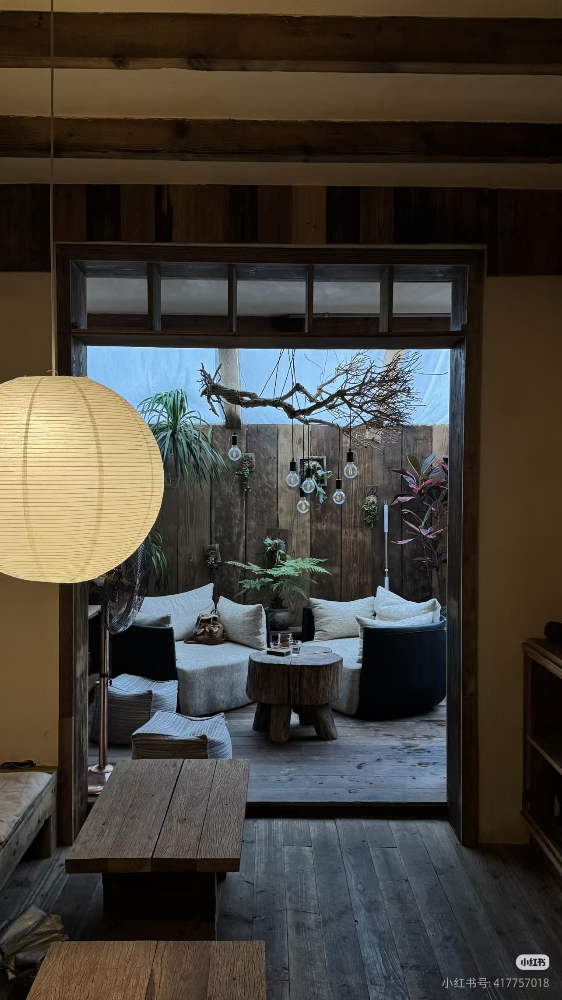

01 / ABOUT
隐于街巷 · 成都武侯
旧木与绿意
围成一段慢时光
知了 COFFEE 藏在玉林街的居民院落里。推门是温润的木作、安静的陶器和一盏纸灯；再往里走，庭院的树影把时间拉得很长。
不必赶着做什么。一个人读书，或与好友久坐，都可以在这里留一段自己的时间。


COFFEE 预约一席今日营业 11:00—18:30
隐于街巷 · 成都武侯
知了 COFFEE 藏在玉林街的居民院落里。推门是温润的木作、安静的陶器和一盏纸灯；再往里走，庭院的树影把时间拉得很长。
不必赶着做什么。一个人读书，或与好友久坐，都可以在这里留一段自己的时间。

02 / THE SPACE
鼠标缓慢移近，或在手机上轻触图片。让景色退成一层记忆，再读空间留下的话。
04 / VISIT
RESERVATION
如果已经选好日子，可以提前告诉我们。预约提交后，我们会尽快与你确认。